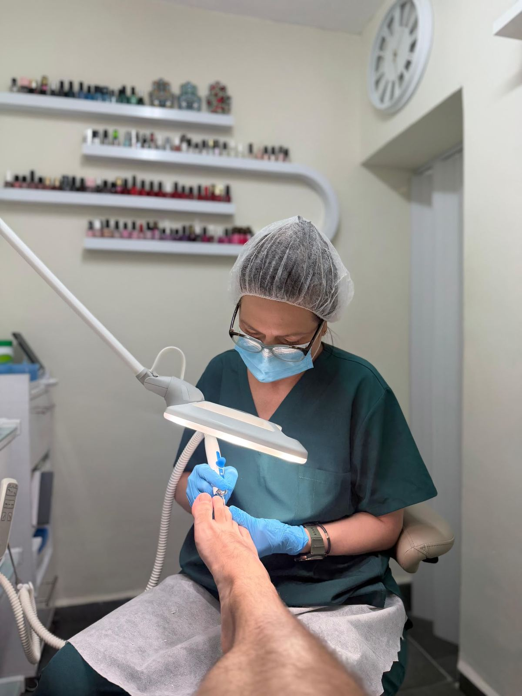
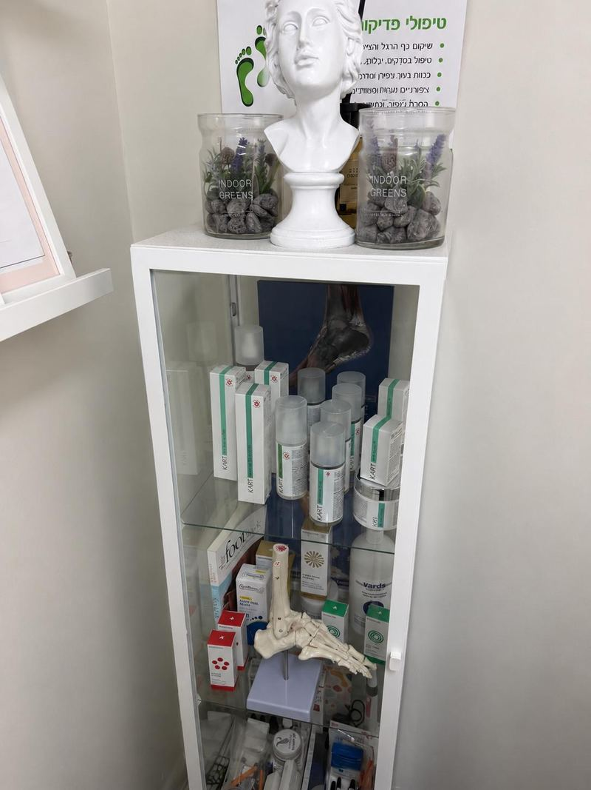
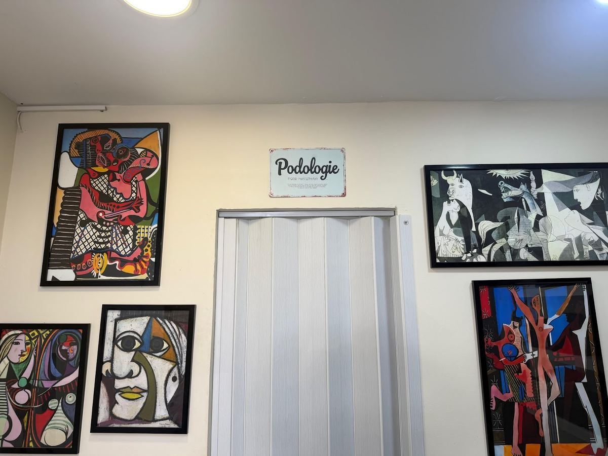
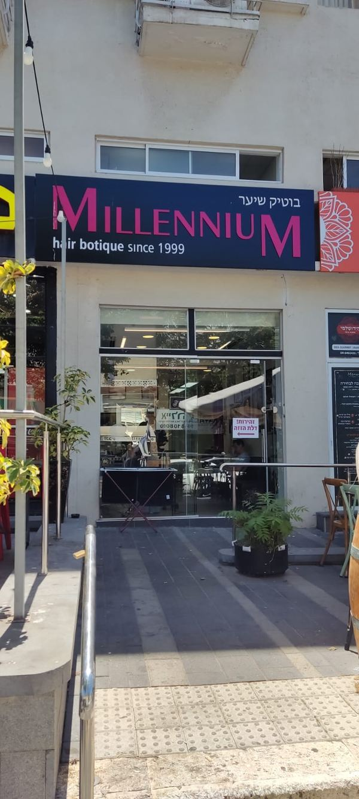

קרינהKarina גנדלGendel
Karina G Podology · פדיקור רפואי וטיפוח כף הרגל, בדרך הים 3, חיפה.Karina G Podology · medical pedicure and foot care, at 3 Derech HaYam, Haifa.

מה עושים על הכיסא.What happens in the chair.
טיפול רפואי בכף הרגל, וטיפוח עד הלק.Medical foot care, and grooming all the way to polish.
-
פדיקור רפואיMedical pedicure
עור, ציפורניים, ומה שביניהם.Skin, nails, and everything between.
-

כף רגל סוכרתיתDiabetic foot
טיפול עדין ברגל שצריכה זהירות.Gentle care for feet that need caution.
-
יבלות, עור קשה וסדקיםCalluses, hard skin, cracks
עבודה מדויקת, בכלים סטריליים.Precise work, with sterile tools.
-
ציפורניים מעוותותDeformed nails
תיקון ציפורן שגדלה עקומה.Correcting a nail that grows crooked.
-
טיפוח ולקGrooming and polish
מדף שלם של צבעים לבחירה.A whole shelf of colours to choose from.
הקליניקה בדרך הים 3.The clinic at 3 Derech HaYam.
כיסא טיפולים, מנורה עם זכוכית מגדלת, ומדף לקים מתפתל.A treatment chair, a magnifier lamp, and a winding polish shelf.

״הקליניקה שלה בוהקת מניקיון, היא מקפידה על סטריליות של כל המכשירים שבהם היא משתמשת.״“Her clinic sparkles with cleanliness, and she is careful about the sterility of every instrument she uses.” (translated)
orna wolk · Google
כל קורס, במסגרת משלו.Every course, in its own frame.
הקיר בקליניקה. בוחרים נושא, והזכוכית המגדלת מוצאת אותו.The wall in the clinic. Pick a topic and the magnifier finds it.
5.0 מ-38 ביקורות.from 38 reviews.
חמישה כוכבים בגוגל, במילים של הלקוחות.Five stars on Google, in clients’ own words.
״קרינה היא פדיקוריסטית מהמעלה הראשונה, גם במקצועיות שלה וגם ביחסי האנוש שלה. היא מטפלת גם בבעיות בכפות הרגליים שנובעות מסוכרת, וגם נותנת מענה מושלם לטיפוח הרגל בהיבט האסתטי.״
“Karina is a first-rate pedicurist, both in her skill and in how she treats people. She treats foot problems caused by diabetes, and also takes perfect care of how the foot looks.” (translated)
״פדיקוריסטית מעולה. החל מהיחס החם והנעים, רמת מקצועיות גבוהה מאוד, ניקיון מטורף של הכל. דיוק בעבודה, שימוש בחומרים איכותיים. ממליצה בחום.״
“An excellent pedicurist. From the warm, pleasant manner to a very high level of skill, and everything incredibly clean. Precise work, quality materials. Warmly recommended.” (translated)
״שנים אני לקוחה של קרינה. היא מקצועית, שירותית מאוד, נעימה, והציוד עובר סטריליזציה קפדנית, שזה חשוב מאוד!״
“I’ve been Karina’s client for years. She’s professional, very attentive, pleasant, and the equipment goes through careful sterilisation, which matters a lot!” (translated)
״שירות בסטנדרט אירופאי אמיתי, כזה שגורם ללקוח להרגיש שמכבדים אותו מהרגע שנכנס. מקצועית, אדיבה, עם המון ידע ותשומת לב לכל פרט.״
“Truly European-standard service, the kind that makes you feel respected from the moment you walk in. Professional, courteous, with a lot of knowledge and attention to every detail.” (translated)
״ממליצה על קרינה מכל הלב. מקצועית מאוד, עדינה, נעימה מאוד, תמיד עם יחס אישי וסבלני. המקום נקי ונעים.״
“I recommend Karina with all my heart. Very professional, gentle, very pleasant, always personal and patient. The place is clean and pleasant.” (translated)
תור אצל קרינה.Book with Karina.
הופכים את הכרטיס, וממלאים שלוש שורות.Flip the card and fill in three lines.
KARINA GENDEL
PEDICURE · 054-365-0200

דרך הים 3, חיפה.3 Derech HaYam, Haifa.
פתוח בימים א׳–ג׳, ה׳ ו־ו׳. ברביעי ובשבת סגור.Open Sun–Tue, Thu and Fri. Closed Wednesday and Saturday.